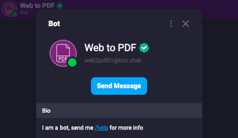

ربات PDF
نشانی یک صفحه وب را میگیرد و آن را به PDF تبدیل میکند. بسته web2pdf روی همین سایت است. مخزن: deltachat-bot/web2pdf.

این صفحه دو نوع افزونه را معرفی میکند: مینیاپ (Webxdc) که داخل خود گپ اجرا میشود، و ربات که یک نمایه جداست و خودکار جواب میدهد.
مینیاپ (Webxdc) برنامه کوچکی با HTML، CSS و JS است که در یک فایل با پسوند .xdc جمع شده و مثل هر پیام دیگری داخل گپ فرستاده میشود.
مینیاپ روی دستگاه خودتان اجرا میشود و به بقیه دستگاه و به اینترنت دسترسی ندارد. داده بازی، رأی یا تخته مشترک فقط بین کسانی رد و بدل میشود که مینیاپ را در همان گپ باز کردهاند و رمزنگاری سراسری دارد. این هماهنگی از راه رله (در برنامه فارسی: گذرگاه) انجام میشود؛ بدون اتصال به رله، مینیاپ فقط روی دستگاه خودتان کار میکند و تغییرات بعداً همگام میشود. بعضی مینیاپهای همزمان (مثل بازی دونفره) ممکن است مستقیم بین دستگاهها وصل شوند؛ در این حالت طرف مقابل IP شما را میبیند.
سازنده مینیاپ به پیامهای شما دسترسی ندارد و برای استفاده از مینیاپ حساب کاربری جدا لازم نیست.
.xdc را از جای دیگری گرفتهاید، آن را مثل هر فایل دیگری پیوست کنید.فهرست مینیاپها و توضیح قالب فایل:
ربات یک نمایه دلتاچت است که روی یک رایانه (مثلاً لپتاپ خانه یا یک سرور) اجرا میشود و خودکار به پیامها جواب میدهد. بیشتر رباتها به IP عمومی یا پورت باز نیاز ندارند و اگر خاموش باشند، بعد از روشن شدن پیامهای جامانده را میگیرند.
نشانی یک صفحه وب را میگیرد و آن را به PDF تبدیل میکند. بسته web2pdf روی همین سایت است. مخزن: deltachat-bot/web2pdf.
کانال تلگرام را به یک گپ دلتاچت وصل میکند. بسته simplebot_tgchan روی همین سایت است. توجه: این پروژه بایگانی شده و دیگر نگهداری نمیشود. مخزن: simplebot-org/simplebot_tgchan.
ربات خوراک (RSS) مطالب تازه یک سایت را داخل گپ میآورد و ربات استیکر بستههای استیکر را در اختیار گپ میگذارد. هر دو را در فهرست رباتها پیدا کنید؛ برنامه فروشگاه مرکزی ربات ندارد.
برای استفاده بدون اینترنت، فایل را دانلود کنید و داخل گپ بفرستید. اینها همان فایلهای .xdc انتخابگر مینیاپ delta.sudoshz.ir/apps هستند (این نشانی فقط از داخل ایران باز میشود). طرف مقابل روی همان پیام میزند و مینیاپ روی دستگاه خودش باز میشود.
اگر فهرست پیشفرض مینیاپها بهخاطر اختلال شبکه باز نشد، در تنظیمات پیشرفته دلتاچت نشانی انتخابگر مینیاپ (App Picker) را روی این نشانی بگذارید:
https://delta.sudoshz.ir/apps/index.html(این نشانی فقط از داخل ایران باز میشود.)
بعد از ذخیره، بخش Apps همان فهرست رله داخلی شیرازلینوکس را نشان میدهد. ساخت نمایه روی همین رله در آموزش رله داخلی است.